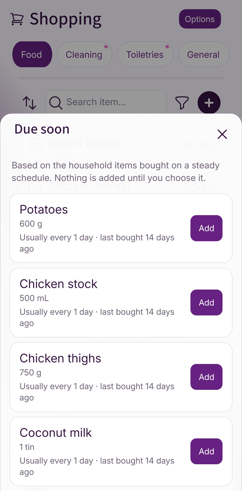

You can plan every dinner for the week and still get home without the toothpaste. Some things belong to the household routine rather than a recipe, and it is easy to remember them only when they have run out. Due Soon is now available in Fameally to help you review things you may need again before you shop.
Keep the things you buy regularly within reach
Fameally already lets you keep regular shopping items and add your weekly regulars to the list. That gives you a starting point for the things your household buys repeatedly, alongside ingredients from your meal plan. You do not need to write the same essentials from scratch each week.
But not everything runs out every week. You might buy washing-up liquid less often than milk, or replace a cupboard staple after several shops. We added Due Soon to make those recurring purchases easier to notice when you are preparing the next list.
Suggestions based on what you have bought
Due Soon looks for items bought on a steady schedule across completed shopping cycles. When the next purchase appears to be approaching, or that usual interval has already passed, it suggests checking whether you need the item again. Suggestions can include food, cleaning supplies, toiletries and general household items.
Fameally needs at least three recorded purchases in separate shopping cycles and a reasonably consistent gap between them before making a suggestion. Each suggestion shows a quantity, how often you usually buy it and how long it has been since the last purchase. Items already on your shopping list are left out.
This is a prompt to check, rather than a measurement of what is left at home. Buying patterns can change, and a suggestion does not mean you have run out. A quick cupboard check is still useful.
Open Due Soon before you shop
- Open your shopping list in Fameally.
- Choose Options, then Due Soon.
- Review the suggestions against what you already have at home.
- Choose Add beside an item you need. It joins the appropriate shopping-list tab.

If nothing appears yet, there may not be enough completed shopping cycles to show a reliable pattern. Irregular purchases may not produce suggestions either. You can carry on using regular items and your shopping list as usual while that history builds.
A small check in the weekly routine
A useful time to open Due Soon is after planning meals and before finalising the food shop. Review your regular items, check the suggestions, then look through the cupboards for anything else that is running low. It brings another part of the household shop into the same preparation routine.
For a practical checklist you can use with or without Fameally, read the easiest way to stop forgetting regular household shopping items.
Due Soon is available now. It is a small addition to the existing shopping workflow: a way to recognise something you may need again, while keeping the decision about what to buy with you.